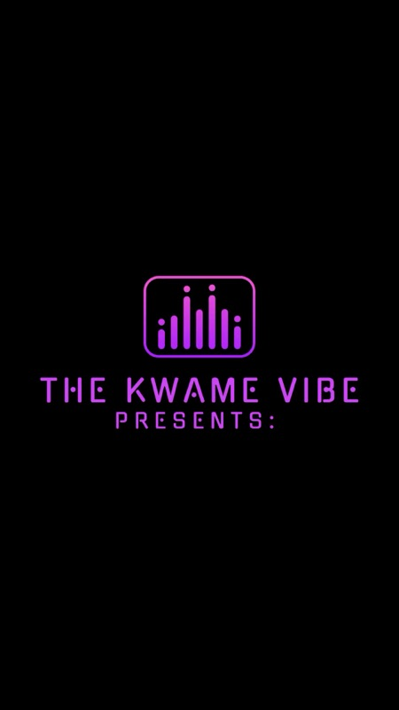

Burlington in your ears and on your screen — our own arts podcast, every local show with its latest episodes playable right here, a couple of great national dailies, and the nightly BTown TV page.

Our show
Arts and entertainment, hosted by Kwame Dankwa — an award-winning radio veteran with 20+ years on the air who DJs festivals all over the area. Latest: he sat down with HAYLA, the Grammy-nominated voice of "Escape" (Kx5) with six million monthly Spotify listeners, at Ilesoniq in Montreal.
Every Vermont show we track, newest episode first — hit play and it starts right here. Refreshed every 20 minutes from the same wire as the Pulse.
Tuning in…
Short, free, and worth the habit.
Run a local show we're missing? Tell the Brief — it joins the wire and shows up here on its own.